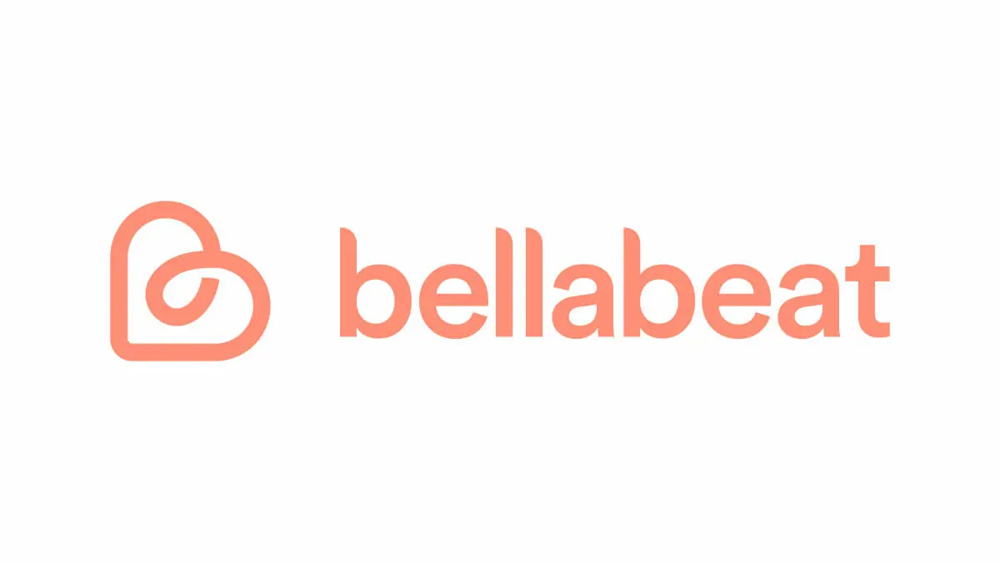

Bellabeat Fitness Data Analysis
Analyzed Fitbit fitness tracker data to identify user patterns and provide marketing insights for Bellabeat's women's health products. Used R and tidyverse for data cleaning, exploration, and visualization of activity and sleep trends.
